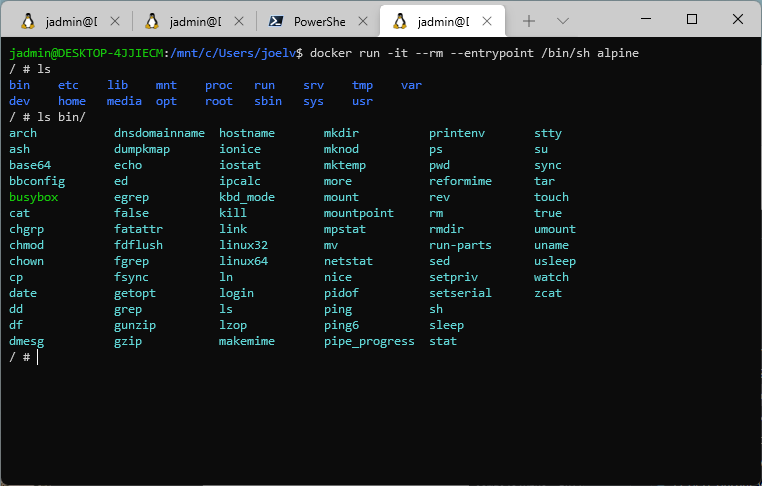
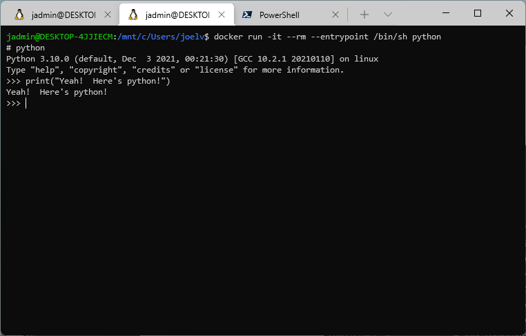

When creating a Dockerfile, we may be able to split up our work into multiple stages to distribute the work in parallel. To simulate a large build, let's setup a Dockerfile with 3 sleep 5 tasks in a single-stage build.
Did you realize that Docker supports building stages in parallel? This can greatly reduce build times depending on the service being built. For example, let's take the following Dockerfile:
We've all been there. Code that works on my machine doesn't work on yours and vice versa. But, why? There are like a number of issues to troubleshoot. Some of the most common are:
Different versions of the programming language, sdk, and runtime.
Docker is great for containerizing your services in production. But, we can do better. Why not use it to containerize your development environment? This way, you can be sure that your development environment matches your production environment exactly. No more surprises, no more excuses.
You can simply build a new image when anything on the list above changes and push it to shared container registry for the team. Then, you can check in the image tag to version control and everyone can spin up an identical environment in minutes. No more wasted time setting up dependencies and configuring tools.
Docker is great for production use, but have you considered using it to quickly take out tools for a spin? I find I'm reaching for the following command multiple times throughout the day.
docker run -it --rm --entrypoint /bin/sh $TOOL
$TOOL can be whatever linux based tool I'm interested in trying out. Let's take out alpine linux for a spin.
docker run -it --rm --entrypoint /bin/sh alpine

Or, I might spin up a python instance to take a look around Python.
docker run -it --rm --entrypoint /bin/sh python

It's also great for other languages you might want to take out for a spin, such as:
Let's revisit a previous post about using Docker to create a SQL SERVER image. Previously, I connected to the DB with SQL SERVER Management Studio (SSMS), but now, I'd like to use sqlcmd to avoid running other tools.
Let's get the latest mssql image for Linux this time from https://hub.docker.com/_/microsoft-mssql-server.
# Pull the Imagedockerpullmcr.microsoft.com/mssql/server:2019-CU5-ubuntu-16.04# Run the Containerdockerrun-e'ACCEPT_EULA=Y'-e'SA_PASSWORD=...'-p1433:1433--namesql1-dmcr.microsoft.com/mssql/server:2019-CU5-ubuntu-16.04# Start an Interactive Shelldockerexec-itsql1/bin/bash# Test SQLCMDopt/mssql-tools/bin/sqlcmd-?
Setting up SQL SERVER on a Docker Container is so easy that I cringe at all of the times that I have installed a full-blown SQL SERVER instance on my systems in the past.
What used to take a few hours with several touch points, now just takes a couple of commands and a few mins.
Also, since this is on Docker, SQL SERVER is fully isolated from the rest of my system.